Трение • Наклонная плоскость • Движение связанных тел
Выберите вариант ответа или введите полученное числовое значение.
Задача 1
Самолет выполняет «мертвую петлю». Если масса летчика $70\text{ кг}$, скорость самолета $100\text{ м/с}$, а радиус «петли» $200\text{ м}$, то в нижней точке траектории летчик давит на сиденье с силой, равной:
В нижней точке «мертвой петли» на летчика действуют две силы: сила тяжести $m\vec{g}$ (вниз) и сила реакции сиденья $\vec{N}$ (вверх). Согласно второму закону Ньютона, их равнодействующая сообщает центростремительное ускорение $a_{\text{ц}} = \frac{v^2}{R}$, направленное к центру петли (вверх):
$$N - mg = \frac{mv^2}{R}$$
Сила, с которой летчик давит на сиденье (вес $P$), по третьему закону Ньютона равна силе реакции опоры $N$:
Модуль силы трения, действующей на бобслейные сани (боб) со спортсменами, $F_{\text{тр}} = 0{,}16\text{ кН}$. Определите коэффициент трения саней по льду, если модуль нормальной составляющей силы реакции льда $N = 3{,}2\text{ кН}$.
Введите коэффициент трения:
Сила трения скольжения связана с силой нормальной реакции опоры формулой:
$$F_{\text{тр}} = \mu \cdot N$$
Где $\mu$ — искомый коэффициент трения. Выразим его из формулы:
$$\mu = \frac{F_{\text{тр}}}{N}$$
Так как обе величины даны в одинаковых единицах измерения (килоньютонах), переводить их в систему СИ (ньютоны) необязательно:
Брусок массой $m = 2{,}0\text{ кг}$ под действием горизонтально направленной силы движется по горизонтальной поверхности с ускорением, модуль которого $a = 1{,}5\text{ }\frac{\text{м}}{\text{с}^2}$. Определите модуль этой силы, если коэффициент трения между бруском и поверхностью $\mu = 0{,}20$.
Введите модуль силы в Ньютонах ($\text{Н}$):
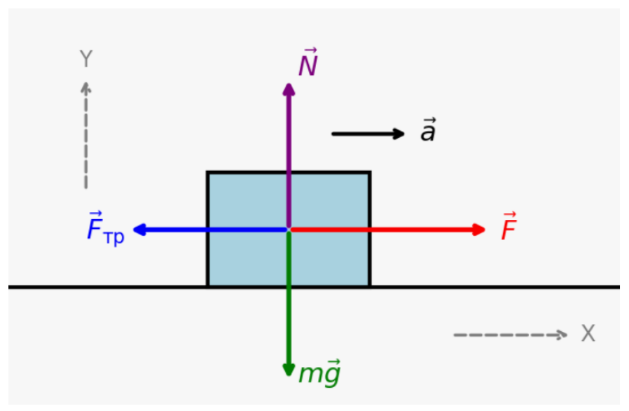
Запишем второй закон Ньютона в векторном виде для всех сил, действующих на брусок:
Поезд массой $m = 4 \cdot 10^5\text{ кг}$, двигавшийся по горизонтальному прямолинейному участку дороги, начал тормозить так, что его координата с течением времени изменялась в соответствии с уравнением $x = A + Bt + Ct^2$, где $A = 0{,}8\text{ км}$, $B = 8\text{ }\frac{\text{м}}{\text{с}}$, $C = -0{,}5\text{ }\frac{\text{м}}{\text{с}^2}$. Определите: а) модуль силы трения, действующей на поезд; б) коэффициент трения; в) время торможения поезда до полной остановки.
Стандартный вид уравнения равноускоренного движения:
$$x(t) = x_0 + v_{0}t + \frac{a_x t^2}{2}$$
Сравнивая коэффициенты перед $t$ и $t^2$ в формуле $x(t) = A + Bt + Ct^2$, находим кинематические параметры:
Модуль ускорения поезда составляет $a = 1\text{ м/с}^2$.
При торможении на горизонтальном пути сила трения — это единственная сила, сообщающая поезду отрицательное ускорение в горизонтальном направлении. По второму закону Ньютона:
$$F_{\text{тр}} = m \cdot a = 4 \cdot 10^5\text{ кг} \cdot 1\text{ м/с}^2 = 4 \cdot 10^5\text{ Н}\text{ (или 400 кН)}$$
б) Найдем коэффициент трения ($\mu$):
Так как поезд движется по горизонтальной поверхности, сила нормальной реакции опоры уравновешивает силу тяжести: $N = mg$.
Формула силы трения скольжения:
На горизонтальной поверхности лежит брусок массой $m = 800\text{ г}$. Коэффициент трения между бруском и поверхностью $\mu = 0{,}25$. На брусок действует горизонтально направленная сила $\vec{F}$, зависимость модуля $F$ которой от времени $t$ показана на рисунке 46. Если от начала действия силы $\vec{F}$ пройдет время $t = 5\text{ с}$, то модуль скорости $v$ движения бруска станет равен:
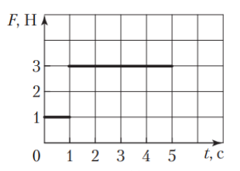
Рис. 46
Модуль максимальной силы трения покоя, действующей на брусок, $F_{\text{тр.п}}^{\text{max}} = \mu mg = 2\text{ Н}$. Из графика (рис. 46) следует: в момент времени $t_1 = 1\text{ с}$ брусок начнет равноускоренно двигаться, так как в этот момент $F > F_{\text{тр.п}}^{\text{max}}$. По второму закону Ньютона $F - F_{\text{тр}} = ma$, где $F = 3\text{ Н}$, $F_{\text{тр}} = F_{\text{тр.п}}^{\text{max}}$. Искомый модуль скорости:
На брусок массой $m = 1\text{ кг}$, находящийся на горизонтальном столе, в горизонтальном направлении действует сила $\vec{F}$, график зависимости модуля которой от времени $t$ показан на рисунке 47. Коэффициент трения бруска о поверхность стола $\mu = 0{,}3$. Зависимость модуля силы трения $F_{\text{тр}}$, действующей на брусок, от времени $t$ показана на рисунке:
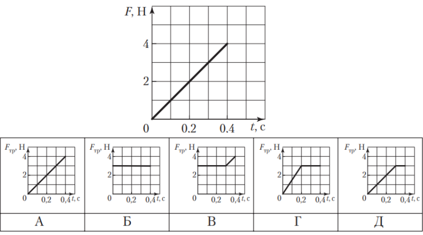
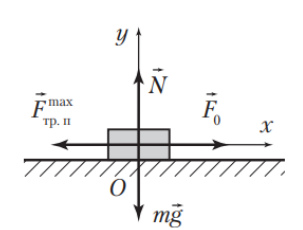
Рис. 414
До начала движения на брусок действует сила трения покоя, модуль которой равен модулю внешней силы $\vec{F}$. В момент начала движения сила трения покоя достигает максимального значения. При скольжении на брусок действует неизменная сила трения скольжения. Сначала найдем максимальную силу трения покоя. На рисунке 414 показаны силы, действующие на брусок. Запишем второй закон Ньютона: $m\vec{g} + \vec{N} + \vec{F}_0 + \vec{F}_{\text{тр.п}}^{\text{max}} = 0$, где $\vec{F}_0$ — внешняя сила, при которой брусок начинает скользить. В проекциях на оси $Ox$ и $Oy$ получим:
Модуль максимальной силы трения покоя $F_{\text{тр.п}}^{\text{max}} = \mu N = \mu mg = 3\text{ Н}$. Из графика (рис. 47) следует, что модуль внешней силы $F_0 = 3\text{ Н}$ достигает в момент времени $t = 0{,}3\text{ с}$. Поэтому до момента времени $t = 0{,}3\text{ с}$ сила трения покоя линейно возрастала от нуля до $F_{\text{тр.п}}^{\text{max}} = 3\text{ Н}$, а после этого брусок скользил и на него действовала неизменная сила трения, модуль которой $F = 3\text{ Н}$. Правильный график показан на рисунке Д.
Ответ: вариант 5 (Д).
Задача 7
Контейнер массой $m = 350\text{ кг}$ равномерно тянут по горизонтальной поверхности, прилагая к нему в горизонтальном направлении силу, модуль которой $F = 980\text{ Н}$. Коэффициент трения скольжения $\mu$ контейнера по поверхности равен:
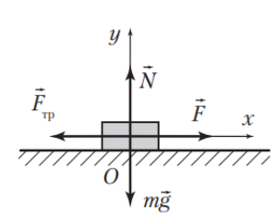
Рис. 415
На рисунке 415 показаны силы, действующие на контейнер. В соответствии со вторым законом Ньютона $m\vec{g} + \vec{F} + \vec{F}_{\text{тр}} + \vec{N} = 0$. В проекциях на координатные оси $Ox$ и $Oy$ получим: $F - F_{\text{тр}} = 0$ и $N - mg = 0$. Модуль силы трения, действующей на контейнер, $F_{\text{тр}} = \mu N$. Из записанных уравнений найдем ответ:
$$\mu = \frac{F}{mg} = 0{,}28.$$
Ответ: вариант 3 (0,28).
Задача 8
Для спуска на воду трактор тянет с постоянной скоростью понтон по горизонтальной поверхности песчаного берега. На рисунке 48 показаны силы, действующие на понтон. Если сила тяги $\vec{F}$ трактора направлена горизонтально, то коэффициент трения $\mu$ между понтоном и поверхностью песчаного берега равен:
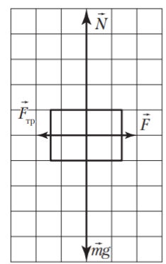
Рис. 48
При равномерном движении $F = F_{\text{тр}}$, где $F_{\text{тр}} = \mu mg$. Из сравнения сил тяги и тяжести, показанных на рисунке 48, следует: $mg = 2{,}5F$. Из записанных уравнений найдем ответ:
$$\mu = 0{,}40.$$
Ответ: вариант 3 (0,40).
Задача 9
Брусок массой $m = 4{,}0\text{ кг}$ начал скользить из состояния покоя по горизонтальной поверхности под действием горизонтальной силы $\vec{F}$. Коэффициент трения скольжения $\mu = 0{,}20$. Если через промежуток времени $\Delta t = 3{,}0\text{ с}$ после начала движения брусок достиг скорости, модуль которой $v = 0{,}90\text{ }\frac{\text{м}}{\text{с}}$, то модуль силы $F$ равен:
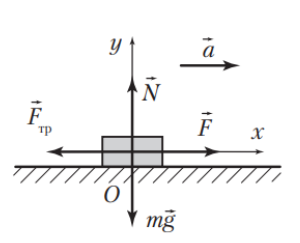
Рис. 416
На рисунке 416 показаны силы, действующие на брусок. В соответствии со вторым законом Ньютона $m\vec{g} + \vec{F} + \vec{F}_{\text{тр}} + \vec{N} = m\vec{a}$. В проекциях на координатные оси $Ox$ и $Oy$ получим: $F - F_{\text{тр}} = ma$ и $N - mg = 0$. Модуль ускорения бруска $a = \frac{v - v_0}{\Delta t}$, где $v_0 = 0$. Модуль силы трения $F_{\text{тр}} = \mu N$. Из записанных уравнений найдем ответ:
Хоккеист ударил по шайбе и сообщил ей в горизонтальном направлении начальную скорость, модуль которой $v_0 = 9{,}7\text{ }\frac{\text{м}}{\text{с}}$. Если в результате скольжения по горизонтальной поверхности льда модуль скорости шайбы за промежуток времени $\Delta t = 2{,}0\text{ с}$ уменьшился до $v = 7{,}3\text{ }\frac{\text{м}}{\text{с}}$, то коэффициент трения $\mu$ между шайбой и поверхностью льда равен:
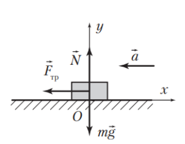
Рис. 417
На рисунке 417 показаны силы, действующие на шайбу. Запишем второй закон Ньютона: $m\vec{g} + \vec{F}_{\text{тр}} + \vec{N} = m\vec{a}$. В проекциях на оси $Ox$ и $Oy$ это уравнение имеет вид: $-F_{\text{тр}} = -ma$ и $N - mg = 0$. Модуль силы трения, действующей на шайбу, $F_{\text{тр}} = \mu N$. Модуль ускорения шайбы $a = -\frac{v - v_0}{\Delta t}$. Из записанных уравнений найдем коэффициент трения:
$$\mu = \frac{v_0 - v}{g\Delta t} = 0{,}12.$$
Ответ: вариант 2 (0,12).
Задача 11
Брусок массой $m = 1{,}0\text{ кг}$ движется с ускорением, модуль которого $a_1 = 1{,}0\text{ }\frac{\text{м}}{\text{с}^2}$, по горизонтальной поверхности под действием горизонтально направленной силы $\vec{F}_1$, модуль которой $F_1 = 2{,}0\text{ Н}$. Если к бруску приложить силу $\vec{F}_2 = 2\vec{F}_1$, то модуль ускорения $a_2$ бруска будет равен:
В соответствии со вторым законом Ньютона $F_1 - F_{\text{тр}} = ma_1$ и $F_2 - F_{\text{тр}} = ma_2$, где $F_{\text{тр}}$ — модуль силы трения, действующей на брусок. Отсюда с учетом условия $F_2 = 2F_1$ найдем ответ:
Коробка массой $m = 32\text{ кг}$ лежит на полу кабины лифта, движущейся вертикально вниз с ускорением, модуль которого $a = 0{,}50\text{ }\frac{\text{м}}{\text{с}^2}$. Если коэффициент трения покоя между коробкой и полом лифта $\mu = 0{,}25$, то для смещения коробки к ней надо приложить минимальную горизонтально направленную силу, модуль которой $F_{\text{min}}$ равен:
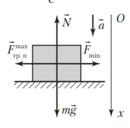
Рис. 418
На рисунке 418 показаны силы, действующие на коробку. Согласно второму закону Ньютона $F_{\text{min}} - F_{\text{тр.п}}^{\text{max}} = 0$ и $mg - N = ma$. Модуль максимальной силы трения покоя $F_{\text{тр.п}}^{\text{max}} = \mu N$. Из записанных уравнений найдем ответ:
$$F_{\text{min}} = \mu m(g - a) = 76\text{ Н}.$$
Ответ: вариант 3 (76 Н).
Задача 13
Локомотив, двигавшийся по горизонтальному прямолинейному участку железной дороги, начал тормозить под действием силы сопротивления. Кинематический закон движения локомотива имеет вид $x = A + Bt + Ct^2$, где $A = 800\text{ м}$, $B = 8{,}0\text{ }\frac{\text{м}}{\text{с}}$, $C = -0{,}50\text{ }\frac{\text{м}}{\text{с}^2}$. Если модуль силы сопротивления прямо пропорционален модулю силы нормальной реакции железной дороги ($F_c = \mu N$), то коэффициент сопротивления $\mu$ равен:
По второму закону Ньютона $F_c = ma$. Модуль силы сопротивления, действующей на локомотив, $F_c = \mu mg$. Модуль ускорения локомотива $a = 2|C|$. Из записанных уравнений найдем коэффициент сопротивления:
$$\mu = 0{,}10.$$
Ответ: вариант 2 (0,10).
Задача 14
Тело движется по горизонтальной поверхности вдоль координатной оси $Ox$ под действием горизонтальной силы $\vec{F}$, модуль которой $F = 0{,}33\text{ Н}$. На рисунке 49 представлен график зависимости проекции скорости $v_x$ тела от времени $t$. Если коэффициент трения скольжения $\mu = 0{,}24$, то масса $m$ тела равна:
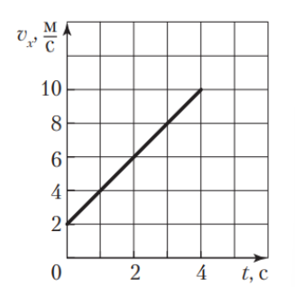
Рис. 49
Используя график (рис. 49), найдем проекцию ускорения тела: $a_x = 2\text{ }\frac{\text{м}}{\text{с}^2}$. На основании второго закона Ньютона запишем уравнение:
$$F - \mu mg = ma.$$
Отсюда следует ответ:
$$m = 75\text{ г}.$$
Ответ: вариант 1 (75 г).
Задача 15
Ящик массой $m = 5{,}0\text{ кг}$ тянут по полу с помощью легкой веревки с силой, направленной вверх под углом $\alpha$ к горизонту ($\sin\alpha = 0{,}60$). К веревке приложена сила, модуль которой $F = 20\text{ Н}$. Если коэффициент трения между ящиком и полом $\mu = 0{,}25$, то модуль ускорения $a$ ящика равен:
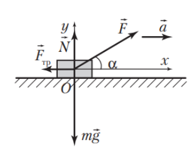
Рис. 419
На рисунке 419 показаны силы, действующие на ящик. Запишем второй закон Ньютона: $m\vec{g} + \vec{F}_{\text{тр}} + \vec{N} + \vec{F} = m\vec{a}$. В проекциях на оси $Ox$ и $Oy$ это уравнение имеет вид:
$$F\cos\alpha - F_{\text{тр}} = ma \quad \text{и} \quad N + F\sin\alpha - mg = 0.$$
Модуль силы трения $F_{\text{тр}} = \mu N$. Из записанных уравнений найдем ответ:
Брусок перемещают вверх вдоль вертикальной стены, прикладывая к нему силу $\vec{F}$, направленную под углом $\alpha$ к вертикали. Известно, что модуль силы $F = 70\text{ Н}$, $\sin\alpha = 0{,}60$, коэффициент трения между стеной и бруском $\mu = 0{,}40$. Если модуль ускорения бруска $a = 4{,}0\text{ }\frac{\text{м}}{\text{с}^2}$, то масса $m$ бруска равна:
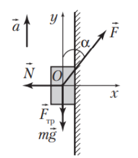
Рис. 420
На рисунке 420 показаны силы, действующие на брусок. По второму закону Ньютона $m\vec{g} + \vec{F}_{\text{тр}} + \vec{N} + \vec{F} = m\vec{a}$. В проекции на оси $Ox$ и $Oy$ уравнение принимает вид:
На брусок, покоящийся на горизонтальной поверхности, начала действовать сила $\vec{F}$, направленная вверх под углом $\alpha$ к горизонту ($\sin\alpha = 0{,}60$). Модуль силы $F = 100\text{ Н}$. Спустя время $t_1 = 10\text{ с}$, когда брусок переместился на расстояние $l = 25\text{ м}$, действие силы $\vec{F}$ прекратилось. Если масса бруска $m = 20\text{ кг}$, то время $t$, в течение которого двигался брусок, равно:
Время $t$ движения бруска равно сумме времени разгона $t_1$ и времени остановки $t_2$. Сначала рассмотрим разгон бруска. Из второго закона Ньютона следует: $-F_{\text{тр}1} + F\cos\alpha = ma_1$ и $N_1 + F\sin\alpha - mg = 0$. При скольжении бруска модуль силы трения $F_{\text{тр}1} = \mu N_1$. Модуль ускорения $a_1 = \frac{2l}{t_1^2}$. Из записанных уравнений найдем коэффициент трения скольжения:
Затем рассмотрим торможение бруска. Модуль максимальной скорости $v = \frac{2l}{t_1}$. На основании второго закона Ньютона запишем два уравнения: $F_{\text{тр}2} = ma_2$ и $N_2 - mg = 0$. Модуль силы трения, действующей на брусок, $F_{\text{тр}2} = \mu N_2$. Модуль ускорения $a_2 = \frac{v}{t_2}$. Из записанных уравнений найдем время торможения:
$$t_2 = \frac{2l}{\mu gt_1} = 1\text{ с}.$$
Искомое время: $t = t_1 + t_2 = 11\text{ с}$.
Ответ: вариант 2 (11 с).
Задача 18
Два бруска массой $m = 1{,}0\text{ кг}$ каждый лежат стопкой на полу (рис. 50). Коэффициент трения между брусками $\mu_1 = 0{,}3$. Верхний брусок с помощью горизонтальной нити привязан к стене. Если коэффициент трения между нижним бруском и полом $\mu_2 = 0{,}2$, то модуль минимальной горизонтальной силы $F_{\text{min}}$, которую надо приложить к нижнему бруску, чтобы вытащить его из-под верхнего бруска, равен:
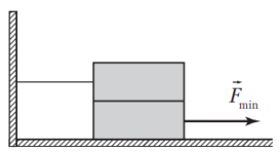
Рис. 50
Чтобы вытащить нижний брусок из-под верхнего, прилагая к нему минимальную горизонтальную силу, должно выполняться условие:
где $F_{\text{тр}1} = \mu_1 mg$ — модуль силы трения, действующей со стороны верхнего бруска на нижний; $F_{\text{тр}2} = \mu_2 2mg$ — модуль силы трения, с которой пол действует на нижний брусок. Из записанных уравнений найдем ответ:
$$F_{\text{min}} = 7\text{ Н}.$$
Ответ: вариант 4 (7 Н).
Задача 19
Пять листов фанеры массой $m = 28\text{ кг}$ каждый сложены стопкой. Коэффициент трения между листами $\mu = 0{,}30$. Чтобы из стопки вытащить средний лист, к нему надо приложить минимальную горизонтальную силу, модуль которой $F_{\text{min}}$ равен:
Чтобы средний лист вытащить из стопки, прилагая к нему минимальную горизонтальную силу, должно выполняться условие:
где $F_{\text{тр}2} = \mu 2mg$, $F_{\text{тр}3} = \mu 3mg$. Из записанных уравнений найдем ответ:
$$F_{\text{min}} = 5\mu mg = 0{,}42\text{ кН}.$$
Ответ: вариант 4 (0,42 кН).
Задача 20
Доска массой $m_1 = 12{,}0\text{ кг}$ находится на гладкой горизонтальной плоскости. На доске лежит брусок массой $m_2 = 3{,}0\text{ кг}$. Коэффициент трения между доской и бруском $\mu = 0{,}20$. Чтобы брусок начал скользить относительно доски, к нему надо приложить минимальную горизонтальную силу, модуль которой $F_{\text{min}}$ равен:
В момент начала проскальзывания бруска относительно доски их ускорения будут одинаковы. По второму закону Ньютона:
$$F_{\text{min}} - \mu m_2 g = m_2 a \quad \text{и} \quad \mu m_2 g = m_1 a.$$
Два груза, связанные невесомой нерастяжимой нитью, движутся равноускоренно по горизонтальной поверхности под действием горизонтальной силы тяги $\vec{F}$, модуль которой $F = 3{,}1\text{ Н}$. Масса первого груза $m_1 = 200\text{ г}$, масса второго груза $m_2 = 600\text{ г}$. Если коэффициент трения между первым грузом и поверхностью $\mu_1 = 0{,}20$, а между вторым грузом и поверхностью — $\mu_2 = 0{,}25$, то модуль ускорения $a$, с которым движутся грузы, равен ... дм/с$^2$.
Введите модуль ускорения в дециметрах на секунду в квадрате ($\text{дм/с}^2$):
Модули силы трения, действующей на первый и второй грузы, соответственно $F_{\text{тр}1} = \mu_1 m_1 g$ и $F_{\text{тр}2} = \mu_2 m_2 g$. По второму закону Ньютона:
$$F - \mu_1 m_1 g - \mu_2 m_2 g = (m_1 + m_2)a.$$
Отсюда найдем ответ:
$$a = 15\text{ }\frac{\text{дм}}{\text{с}^2}.$$
Ответ: 15.
Задача 22
Брусок массой $m_1 = 400\text{ г}$, находящийся на горизонтальном столе, связан легкой нерастяжимой нитью, перекинутой через легкий блок, с грузом массой $m_2 = 100\text{ г}$, который свешивается со стола (рис. 51). Если коэффициент трения скольжения между бруском и столом $\mu = 0{,}20$, то за промежуток времени $\Delta t = 2{,}0\text{ с}$ брусок из состояния покоя пройдет по столу путь $s$, равный ... см.
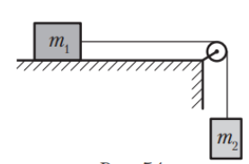
Рис. 51
Введите путь в сантиметрах ($\text{см}$):
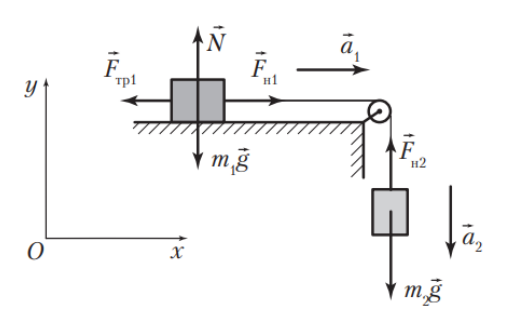
Рис. 421
На рисунке 421 показаны силы, действующие на брусок и груз. Из второго закона Ньютона получим: $F_{\text{н}1} - \mu m_1 g = m_1 a_1$ и $m_2 g - F_{\text{н}2} = m_2 a_2$. Модуль силы натяжения нити $F_{\text{н}1} = F_{\text{н}2}$. Модуль ускорения $a_1 = a_2 = a$.
Два тела массами $m_1 = 6{,}0\text{ кг}$ и $m_2 = 4{,}0\text{ кг}$, соединенные невесомой нерастяжимой нитью, лежат на горизонтальной поверхности. К первому телу прикладывают силу $\vec{F}$, направленную вверх под углом $\alpha$ ($\cos\alpha = 0{,}80$) к горизонту (рис. 52). Модуль силы $F = 50\text{ Н}$. Если коэффициент трения между каждым телом и поверхностью $\mu = 0{,}50$, то модуль силы натяжения нити $F_{\text{н}}$ равен ... Н.
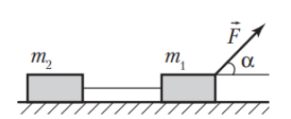
Рис. 52
Введите модуль силы натяжения в Ньютонах ($\text{Н}$):
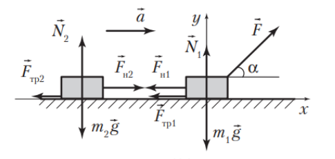
Рис. 422
На рисунке 422 показаны силы, действующие на первое и второе тела. Запишем второй закон Ньютона для каждого тела:
На гладкой горизонтальной поверхности лежит доска массой $m_1 = 12{,}0\text{ кг}$, на которой находится брусок массой $m_2 = 4{,}0\text{ кг}$. Доска и брусок соединены легкой нерастяжимой нитью, перекинутой через легкий блок, вращающийся без трения вокруг оси (рис. 53). Коэффициент трения скольжения между бруском и доской $\mu = 0{,}40$. На доску в горизонтальном направлении действует сила $\vec{F}$. Если за промежуток времени $\Delta t = 1{,}6\text{ с}$ перемещение бруска по доске из состояния покоя равно $\Delta\vec{r}$ ($\Delta r = 80\text{ см}$), то модуль силы $F$ равен ... Н.
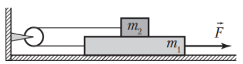
Рис. 53
Введите модуль силы в Ньютонах ($\text{Н}$):
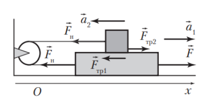
Рис. 423
На рисунке 423 показаны силы, действующие на доску и брусок в горизонтальном направлении. По второму закону Ньютона:
Тело соскальзывает с наклонной плоскости высотой $h = 3\text{ м}$ и длиной $l = 5\text{ м}$. Если коэффициент трения $\mu = 0{,}5$, то модуль ускорения $a$ тела равен ... м/с$^2$.
Введите модуль ускорения в метрах на секунду в квадрате ($\text{м/с}^2$):
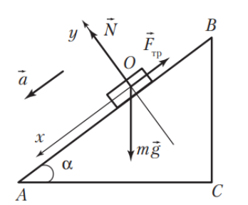
Рис. 424
На рисунке 424 показаны силы, действующие на тело. Из второго закона Ньютона следует: $ma = mg\sin\alpha - F_{\text{тр}}$ и $0 = N - mg\cos\alpha$. Модуль силы трения $F_{\text{тр}} = \mu N$. Из рисунка следует: $\sin\alpha = \frac{BC}{AB} = \frac{h}{l} = \frac{3}{5}$ и $\cos\alpha = \frac{AC}{AB} = \frac{\sqrt{l^2 - h^2}}{l} = \frac{4}{5}$. Из записанных уравнений найдем ответ:
С вершины наклонной плоскости высотой $h = 5\text{ м}$ и углом наклона к горизонту $\alpha = 45^\circ$ начинает соскальзывать тело. Если коэффициент трения между телом и плоскостью $\mu = 0{,}19$, то модуль скорости $v$ движения тела в конце спуска равен ... м/с.
Введите модуль скорости в метрах в секунду ($\text{м/с}$):
Из второго закона Ньютона следует: $ma = mg\sin\alpha - F_{\text{тр}}$ и $0 = N - mg\cos\alpha$. Модуль силы трения $F_{\text{тр}} = \mu N$. Запишем уравнение кинематики: $v^2 = 2a\frac{h}{\sin\alpha}$. Из записанных уравнений найдем ответ:
Брусок движется вверх по наклонной плоскости, образующей угол $\alpha$ ($\cos\alpha = 0{,}6$) с горизонтом, под действием силы, модуль которой $F = 59\text{ Н}$, направленной вверх вдоль плоскости. Коэффициент трения скольжения между бруском и плоскостью $\mu = 0{,}3$. Если за промежуток времени $\Delta t = 0{,}8\text{ с}$ брусок из состояния покоя совершил перемещение, модуль которого $\Delta r = 64\text{ см}$, то масса $m$ бруска равна ... кг.
Введите массу бруска в килограммах ($\text{кг}$):
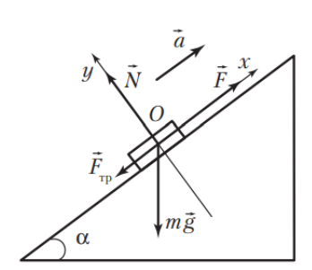
Рис. 426
На рисунке 426 показаны силы, действующие на брусок. Запишем второй закон Ньютона: $m\vec{g} + \vec{F}_{\text{тр}} + \vec{N} + \vec{F} = m\vec{a}$. В проекциях на координатные оси $Ox$ и $Oy$ это уравнение имеет вид:
По наклонной плоскости, составляющей угол $\alpha = 30^\circ$ с горизонтом, соскальзывает пеноблок массой $m = 15\text{ кг}$. Коэффициент трения скольжения между пеноблоком и плоскостью изменяется вдоль плоскости. Если зависимость проекции ускорения $a_x$ от времени $t$ имеет вид, изображенный на рисунке 54, то максимальное значение модуля силы трения скольжения $F_{\text{тр}}^{\text{max}}$ равно ... Н.
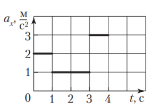
Рис. 54
Введите максимальную силу трения в Ньютонах ($\text{Н}$):
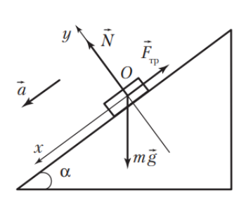
Рис. 427
На рисунке 427 показаны силы, действующие на пеноблок. Запишем второй закон Ньютона: $m\vec{g} + \vec{F}_{\text{тр}} + \vec{N} = m\vec{a}$. В проекциях на координатную ось $Ox$ это уравнение имеет вид: $-F_{\text{тр}} + mg\sin\alpha = ma$. Отсюда следует, что на участке с максимальной силой трения ускорение минимальное. Поэтому рассмотрим второй участок, на котором $a_{2x} = 1{,}0\text{ }\frac{\text{м}}{\text{с}^2}$.
На наклонной плоскости, образующей угол $\alpha = 45^\circ$ с горизонтом, находится брусок массой $m = 11\text{ кг}$. Коэффициент трения между бруском и плоскостью $\mu = 0{,}10$. Чтобы брусок не двигался, к нему должна быть приложена горизонтальная минимальная сила, модуль которой $F_{\text{min}}$ равен ... Н.
Введите минимальную силу в Ньютонах ($\text{Н}$):
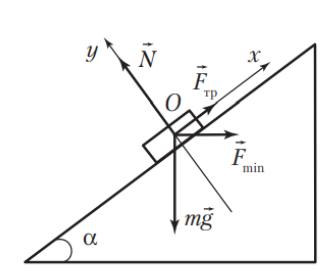
Рис. 428
На рисунке 428 показаны силы, действующие на брусок. Из второго закона Ньютона следует:
Два ящика массами $m_1 = 40\text{ кг}$ и $m_2 = 60\text{ кг}$, связанные невесомым нерастяжимым тросом, соскальзывают с наклонной плоскости, составляющей с горизонтом угол $\alpha = 60^\circ$ (рис. 56). Если коэффициент трения между нижним ящиком и плоскостью $\mu_1 = 0{,}15$, а между верхним ящиком и плоскостью $\mu_2 = 0{,}40$, то модуль силы натяжения $F_{\text{н}}$ троса равен ... Н.
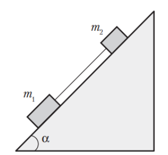
Рис. 56
Введите модуль силы натяжения в Ньютонах ($\text{Н}$):
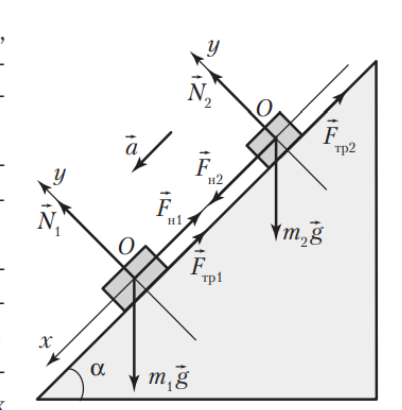
Рис. 430
На рисунке 430 показаны силы, действующие на каждый ящик. Из второго закона Ньютона для первого ящика следует:
На закреплённой в горизонтальном положении треугольной призме с углом $\alpha = 30^\circ$ расположены два груза массами $m_1 = 5{,}0\text{ кг}$ и $m_2 = 6{,}0\text{ кг}$ (см. рис.). Грузы соединены невесомой нерастяжимой нитью, перекинутой через неподвижный блок, и находятся в состоянии покоя на гладких поверхностях. После приложения к грузу $m_1$ постоянной горизонтальной силы $\vec{F}$ грузы пришли в движение. При этом груз $m_1$ стал подниматься, а груз $m_2$, опускаясь, попал на шероховатый участок $AC$ с коэффициентом трения $\mu = 0{,}30$. Если при дальнейшем движении грузов модуль их ускорений равен $a = 0{,}80\text{ }\frac{\text{м}}{\text{с}^2}$, то модуль силы $F$ равен ... Н.
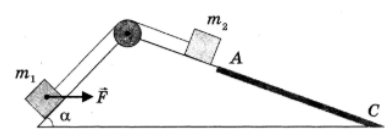
Введите модуль силы в Ньютонах ($\text{Н}$):
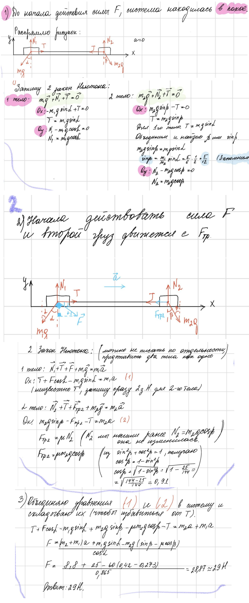
1) До начала действия силы $F$ система находилась в покое ($a = 0$):
Запишем 2 закон Ньютона: